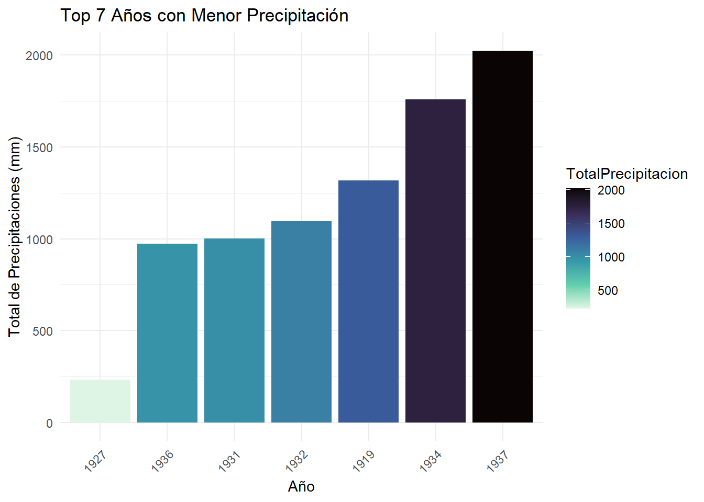

# A tibble: 6 × 19
ESTACIÓN CÓDIGO `X=N` `Y=E` MUNICIPIO CUENCA AÑO ENERO FEBRERO MARZO ABRIL
<chr> <dbl> <dbl> <dbl> <chr> <chr> <dbl> <dbl> <dbl> <dbl> <dbl>
1 Pajas B… 2.12e6 973320 944710 Nilo R. Pa… 1995 0 0 0 0
2 Pajas B… 2.12e6 973320 944710 Nilo R. Pa… 1996 296. 127. 248. 149.
3 Pajas B… 2.12e6 973320 944710 Nilo R. Pa… 1997 294. 76.9 160. 296.
4 Pajas B… 2.12e6 973320 944710 Nilo R. Pa… 1998 144. 118 209. 438.
5 Pajas B… 2.12e6 973320 944710 Nilo R. Pa… 1999 78.3 257. 83 339.
6 Pajas B… 2.12e6 973320 944710 Nilo R. Pa… 2000 113. 305. 202. 323.
# ℹ 8 more variables: MAYO <dbl>, JUNIO <dbl>, JULIO <dbl>, AGOSTO <dbl>,
# SEPTIEMBRE <dbl>, OCTUBRE <dbl>, NOVIEMBRE <dbl>, DICIEMBRE <dbl>
hist(precipitaciones$AÑO, n=75)
stat.desc(precipitaciones)
ESTACIÓN CÓDIGO X=N Y=E MUNICIPIO CUENCA
nbr.val NA 6.196000e+03 6.196000e+03 6.196000e+03 NA NA
nbr.null NA 0.000000e+00 1.800000e+01 1.800000e+01 NA NA
nbr.na NA 0.000000e+00 0.000000e+00 0.000000e+00 NA NA
min NA 2.119022e+06 0.000000e+00 0.000000e+00 NA NA
max NA 3.509510e+06 1.133250e+06 1.134650e+06 NA NA
range NA 1.390488e+06 1.133250e+06 1.134650e+06 NA NA
sum NA 1.400220e+10 6.482776e+09 6.238653e+09 NA NA
median NA 2.120565e+06 1.053180e+06 1.017125e+06 NA NA
mean NA 2.259878e+06 1.046284e+06 1.006884e+06 NA NA
SE.mean NA 3.210133e+03 8.833194e+02 8.695060e+02 NA NA
CI.mean NA 6.292975e+03 1.731613e+03 1.704534e+03 NA NA
var NA 6.384951e+10 4.834449e+09 4.684428e+09 NA NA
std.dev NA 2.526846e+05 6.953020e+04 6.844288e+04 NA NA
coef.var NA 1.118134e-01 6.645442e-02 6.797495e-02 NA NA
AÑO ENERO FEBRERO MARZO ABRIL
nbr.val 6.196000e+03 6.196000e+03 6.196000e+03 6.196000e+03 6.196000e+03
nbr.null 0.000000e+00 6.270000e+02 3.920000e+02 3.280000e+02 3.000000e+02
nbr.na 0.000000e+00 0.000000e+00 0.000000e+00 0.000000e+00 0.000000e+00
min 1.919000e+03 0.000000e+00 0.000000e+00 0.000000e+00 0.000000e+00
max 2.019000e+03 3.097000e+03 2.797000e+03 1.298000e+03 8.285000e+02
range 1.000000e+02 3.097000e+03 2.797000e+03 1.298000e+03 8.285000e+02
sum 1.233672e+07 2.442283e+05 3.264612e+05 5.180772e+05 7.136501e+05
median 1.993000e+03 2.605000e+01 4.045000e+01 7.140000e+01 9.875000e+01
mean 1.991078e+03 3.941709e+01 5.268903e+01 8.361478e+01 1.151792e+02
SE.mean 2.305159e-01 8.858229e-01 7.626290e-01 8.549761e-01 1.052163e+00
CI.mean 4.518911e-01 1.736520e+00 1.495018e+00 1.676050e+00 2.062605e+00
var 3.292404e+02 4.861891e+03 3.603612e+03 4.529178e+03 6.859266e+03
std.dev 1.814498e+01 6.972726e+01 6.003010e+01 6.729917e+01 8.282069e+01
coef.var 9.113147e-03 1.768960e+00 1.139328e+00 8.048716e-01 7.190596e-01
MAYO JUNIO JULIO AGOSTO SEPTIEMBRE
nbr.val 6.196000e+03 6.195000e+03 6.196000e+03 6.196000e+03 6.196000e+03
nbr.null 3.560000e+02 4.590000e+02 4.840000e+02 4.780000e+02 4.280000e+02
nbr.na 0.000000e+00 1.000000e+00 0.000000e+00 0.000000e+00 0.000000e+00
min 0.000000e+00 0.000000e+00 0.000000e+00 0.000000e+00 0.000000e+00
max 8.235000e+02 7.910000e+02 5.500000e+02 5.005000e+02 4.986000e+02
range 8.235000e+02 7.910000e+02 5.500000e+02 5.005000e+02 4.986000e+02
sum 6.218304e+05 4.018006e+05 3.432026e+05 3.202993e+05 3.828326e+05
median 9.020000e+01 5.550000e+01 4.415000e+01 4.215000e+01 5.200000e+01
mean 1.003600e+02 6.485885e+01 5.539099e+01 5.169453e+01 6.178706e+01
SE.mean 8.876913e-01 6.711454e-01 6.413230e-01 5.747515e-01 6.350710e-01
CI.mean 1.740183e+00 1.315678e+00 1.257216e+00 1.126712e+00 1.244960e+00
var 4.882423e+03 2.790452e+03 2.548385e+03 2.046782e+03 2.498941e+03
std.dev 6.987433e+01 5.282473e+01 5.048153e+01 4.524138e+01 4.998941e+01
coef.var 6.962371e-01 8.144567e-01 9.113671e-01 8.751677e-01 8.090596e-01
OCTUBRE NOVIEMBRE DICIEMBRE
nbr.val 6.196000e+03 6.196000e+03 6.196000e+03
nbr.null 4.060000e+02 4.430000e+02 5.690000e+02
nbr.na 0.000000e+00 0.000000e+00 0.000000e+00
min 0.000000e+00 0.000000e+00 0.000000e+00
max 6.752000e+02 7.670000e+02 5.323000e+02
range 6.752000e+02 7.670000e+02 5.323000e+02
sum 7.032189e+05 6.525248e+05 3.537983e+05
median 1.020000e+02 9.150000e+01 4.405000e+01
mean 1.134956e+02 1.053139e+02 5.710108e+01
SE.mean 1.018800e+00 1.015103e+00 6.964416e-01
CI.mean 1.997202e+00 1.989954e+00 1.365267e+00
var 6.431165e+03 6.384568e+03 3.005252e+03
std.dev 8.019455e+01 7.990349e+01 5.482017e+01
coef.var 7.065871e-01 7.587176e-01 9.600549e-01
summary(precipitaciones)
ESTACIÓN CÓDIGO X=N Y=E
Length:6196 Min. :2119022 Min. : 0 Min. : 0
Class :character 1st Qu.:2120156 1st Qu.:1018200 1st Qu.: 987380
Mode :character Median :2120565 Median :1053180 Median :1017125
Mean :2259878 Mean :1046284 Mean :1006884
3rd Qu.:2401038 3rd Qu.:1077060 3rd Qu.:1031590
Max. :3509510 Max. :1133250 Max. :1134650
MUNICIPIO CUENCA AÑO ENERO
Length:6196 Length:6196 Min. :1919 Min. : 0.00
Class :character Class :character 1st Qu.:1977 1st Qu.: 8.60
Mode :character Mode :character Median :1993 Median : 26.05
Mean :1991 Mean : 39.42
3rd Qu.:2006 3rd Qu.: 53.40
Max. :2019 Max. :3097.00
FEBRERO MARZO ABRIL MAYO
Min. : 0.00 Min. : 0.00 Min. : 0.00 Min. : 0.0
1st Qu.: 19.18 1st Qu.: 37.77 1st Qu.: 59.30 1st Qu.: 53.5
Median : 40.45 Median : 71.40 Median : 98.75 Median : 90.2
Mean : 52.69 Mean : 83.61 Mean :115.18 Mean :100.4
3rd Qu.: 71.00 3rd Qu.: 113.40 3rd Qu.:154.50 3rd Qu.:134.6
Max. :2797.00 Max. :1298.00 Max. :828.50 Max. :823.5
JUNIO JULIO AGOSTO SEPTIEMBRE
Min. : 0.00 Min. : 0.00 Min. : 0.00 Min. : 0.00
1st Qu.: 29.70 1st Qu.: 23.00 1st Qu.: 22.20 1st Qu.: 28.07
Median : 55.50 Median : 44.15 Median : 42.15 Median : 52.00
Mean : 64.86 Mean : 55.39 Mean : 51.69 Mean : 61.79
3rd Qu.: 88.00 3rd Qu.: 72.70 3rd Qu.: 69.50 3rd Qu.: 83.72
Max. :791.00 Max. :550.00 Max. :500.50 Max. :498.60
NA's :1
OCTUBRE NOVIEMBRE DICIEMBRE
Min. : 0.0 Min. : 0.0 Min. : 0.00
1st Qu.: 58.5 1st Qu.: 52.9 1st Qu.: 18.20
Median :102.0 Median : 91.5 Median : 44.05
Mean :113.5 Mean :105.3 Mean : 57.10
3rd Qu.:153.3 3rd Qu.:140.5 3rd Qu.: 80.53
Max. :675.2 Max. :767.0 Max. :532.30
station_count <- precipitaciones %>%group_by(ESTACIÓN) %>%summarize(Conteo =n(), .groups ='drop') %>%arrange(ESTACIÓN) # Ordenar alfabéticamente por estación# Mostrar la tabla con conteos ordenadosprint(station_count)
# A tibble: 174 × 2
ESTACIÓN Conteo
<chr> <int>
1 Acandy 42
2 Agua Fría 22
3 Alco 37
4 Almaviva 21
5 Alto Caicedo 4
6 Alto La Puerta 3
7 Alto Saboya 36
8 Alto de Aire 33
9 América 10
10 Anclaje 14 31
# ℹ 164 more rows
# Convertir los datos a formato largolong_data <- precipitaciones %>%pivot_longer(cols = ENERO:DICIEMBRE, names_to ="Mes", values_to ="Precipitacion")# Calcular el total de precipitaciones por mestotal_precipitation_by_month <- long_data %>%group_by(Mes) %>%summarise(TotalPrecipitacion =sum(Precipitacion, na.rm =TRUE)) %>%arrange(desc(TotalPrecipitacion))# Mes con mayor precipitaciónmes_mas_lluvioso <- total_precipitation_by_month[1,]mes_mas_lluvioso
# A tibble: 1 × 2
Mes TotalPrecipitacion
<chr> <dbl>
1 ABRIL 713650.
# Mes con menor precipitaciónmes_menos_lluvioso <- total_precipitation_by_month[nrow(total_precipitation_by_month),]mes_menos_lluvioso
# A tibble: 1 × 2
Mes TotalPrecipitacion
<chr> <dbl>
1 ENERO 244228.
# Calcular el total de precipitaciones por añototal_precipitation_by_year <- long_data %>%group_by(AÑO) %>%summarise(TotalPrecipitacion =sum(Precipitacion, na.rm =TRUE)) %>%arrange(desc(TotalPrecipitacion))# Año con mayor precipitaciónaño_mas_lluvioso <- total_precipitation_by_year[1,]# Año con menor precipitaciónaño_menos_lluvioso <- total_precipitation_by_year[nrow(total_precipitation_by_year),]# Imprimir resultadosprint("Mes con mayor precipitación:")
[1] "Mes con mayor precipitación:"
print(mes_mas_lluvioso)
# A tibble: 1 × 2
Mes TotalPrecipitacion
<chr> <dbl>
1 ABRIL 713650.
print("Mes con menor precipitación:")
[1] "Mes con menor precipitación:"
print(mes_menos_lluvioso)
# A tibble: 1 × 2
Mes TotalPrecipitacion
<chr> <dbl>
1 ENERO 244228.
print("Año con mayor precipitación:")
[1] "Año con mayor precipitación:"
print(año_mas_lluvioso)
# A tibble: 1 × 2
AÑO TotalPrecipitacion
<dbl> <dbl>
1 2011 190432.
print("Año con menor precipitación:")
[1] "Año con menor precipitación:"
print(año_menos_lluvioso)
# A tibble: 1 × 2
AÑO TotalPrecipitacion
<dbl> <dbl>
1 1927 232.
# Calcular la precipitación total por añototal_precipitation_by_year <- precipitaciones %>%group_by(AÑO) %>%summarise(TotalPrecipitacion =sum(c_across(ENERO:DICIEMBRE), na.rm =TRUE)) %>%arrange(desc(TotalPrecipitacion))# Seleccionar los 7 años más lluviosostop7_years <- total_precipitation_by_year %>%slice_max(TotalPrecipitacion, n =7)# Seleccionar los 7 años menos lluviososbottom7_years <- total_precipitation_by_year %>%slice_min(TotalPrecipitacion, n =7)# Gráfico de barras para los 7 años más lluviososggplot(top7_years, aes(x =reorder(factor(AÑO), TotalPrecipitacion), y = TotalPrecipitacion, fill = TotalPrecipitacion)) +geom_bar(stat ="identity") +scale_fill_viridis_c(option ="plasma", direction =-1) +labs(title ="Top 7 Años con Mayor Precipitación" ,x ="Año",y ="Total de Precipitaciones (mm)") +theme_minimal() +theme(axis.text.x =element_text(angle =45, hjust =1))
# Gráfico de barras para los 7 años menos lluviososggplot(bottom7_years, aes(x =reorder(factor(AÑO), TotalPrecipitacion), y = TotalPrecipitacion, fill = TotalPrecipitacion)) +geom_bar(stat ="identity") +scale_fill_viridis_c(option ="mako", direction =-1) +labs(title ="Top 7 Años con Menor Precipitación",x ="Año",y ="Total de Precipitaciones (mm)") +theme_minimal() +theme(axis.text.x =element_text(angle =45, hjust =1))

# Gráfico de barras para los meses más y menos lluviososggplot(total_precipitation_by_month, aes(x =reorder(Mes, -TotalPrecipitacion), y = TotalPrecipitacion, fill = TotalPrecipitacion)) +geom_bar(stat ="identity") +scale_fill_viridis_c(option ="magma", direction =-1) +labs(title ="Precipitación Total por Mes",x ="Mes",y ="Total de Precipitaciones (mm)") +theme_minimal() +theme(axis.text.x =element_text(angle =45, hjust =1))
ESTACIÓN CÓDIGO X=N Y=E
Length:83 Min. :2120539 Min. :1054000 Min. :1038500
Class :character 1st Qu.:2120539 1st Qu.:1054000 1st Qu.:1038500
Mode :character Median :2120539 Median :1054000 Median :1038500
Mean :2120539 Mean :1054000 Mean :1038500
3rd Qu.:2120539 3rd Qu.:1054000 3rd Qu.:1038500
Max. :2120539 Max. :1054000 Max. :1038500
MUNICIPIO CUENCA AÑO ENERO
Length:83 Length:83 Min. :1919 Min. : 0.00
Class :character Class :character 1st Qu.:1958 1st Qu.: 6.35
Mode :character Mode :character Median :1979 Median : 17.30
Mean :1979 Mean : 26.84
3rd Qu.:2000 3rd Qu.: 33.35
Max. :2019 Max. :177.60
FEBRERO MARZO ABRIL MAYO
Min. : 0.00 Min. : 0.00 Min. : 0.00 Min. : 0.00
1st Qu.:11.15 1st Qu.: 24.40 1st Qu.: 51.45 1st Qu.: 71.15
Median :22.30 Median : 47.00 Median : 87.10 Median : 96.60
Mean :24.32 Mean : 53.37 Mean : 91.97 Mean :101.44
3rd Qu.:33.70 3rd Qu.: 74.15 3rd Qu.:114.00 3rd Qu.:134.90
Max. :73.20 Max. :165.60 Max. :240.70 Max. :210.80
JUNIO JULIO AGOSTO SEPTIEMBRE
Min. : 0.0 Min. : 0.0 Min. : 0.00 Min. : 0.00
1st Qu.: 86.0 1st Qu.: 95.8 1st Qu.: 72.20 1st Qu.: 41.75
Median :107.4 Median :120.4 Median : 94.70 Median : 58.00
Mean :112.6 Mean :119.7 Mean : 96.23 Mean : 63.34
3rd Qu.:140.6 3rd Qu.:140.1 3rd Qu.:118.80 3rd Qu.: 81.15
Max. :255.9 Max. :263.6 Max. :213.50 Max. :153.20
OCTUBRE NOVIEMBRE DICIEMBRE
Min. : 0.00 Min. : 0.00 Min. : 0.00
1st Qu.: 54.20 1st Qu.: 40.15 1st Qu.: 13.35
Median : 77.30 Median : 57.60 Median : 21.50
Mean : 82.59 Mean : 63.10 Mean : 27.92
3rd Qu.:107.30 3rd Qu.: 80.40 3rd Qu.: 39.50
Max. :219.30 Max. :171.30 Max. :111.70
ESTACIÓN CÓDIGO X=N Y=E
Length:73 Min. :2120562 Min. :1034500 Min. :1023500
Class :character 1st Qu.:2120562 1st Qu.:1034500 1st Qu.:1023500
Mode :character Median :2120562 Median :1034500 Median :1023500
Mean :2120562 Mean :1034500 Mean :1023500
3rd Qu.:2120562 3rd Qu.:1034500 3rd Qu.:1023500
Max. :2120562 Max. :1034500 Max. :1023500
MUNICIPIO CUENCA AÑO ENERO
Length:73 Length:73 Min. :1941 Min. : 0.00
Class :character Class :character 1st Qu.:1959 1st Qu.: 14.30
Mode :character Mode :character Median :1982 Median : 33.10
Mean :1980 Mean : 37.61
3rd Qu.:2000 3rd Qu.: 49.00
Max. :2018 Max. :150.00
FEBRERO MARZO ABRIL MAYO
Min. : 0.00 Min. : 0.00 Min. : 0.00 Min. : 0.00
1st Qu.: 20.80 1st Qu.: 35.80 1st Qu.: 49.30 1st Qu.: 50.70
Median : 34.80 Median : 60.40 Median : 82.90 Median : 83.40
Mean : 40.79 Mean : 65.94 Mean : 86.27 Mean : 82.56
3rd Qu.: 54.80 3rd Qu.: 92.00 3rd Qu.:113.10 3rd Qu.:108.60
Max. :180.40 Max. :171.70 Max. :262.00 Max. :228.50
JUNIO JULIO AGOSTO SEPTIEMBRE
Min. : 0.0 Min. : 0.00 Min. : 0.00 Min. : 0.00
1st Qu.: 36.3 1st Qu.: 36.70 1st Qu.: 30.60 1st Qu.: 25.10
Median : 50.6 Median : 50.00 Median : 43.30 Median : 39.30
Mean : 57.0 Mean : 50.46 Mean : 45.06 Mean : 45.59
3rd Qu.: 75.3 3rd Qu.: 59.60 3rd Qu.: 56.50 3rd Qu.: 64.20
Max. :121.1 Max. :110.70 Max. :180.00 Max. :138.20
OCTUBRE NOVIEMBRE DICIEMBRE
Min. : 0.00 Min. : 0.00 Min. : 0.00
1st Qu.: 46.50 1st Qu.: 49.50 1st Qu.: 18.70
Median : 81.40 Median : 72.30 Median : 35.80
Mean : 84.82 Mean : 76.33 Mean : 42.81
3rd Qu.:120.10 3rd Qu.: 96.70 3rd Qu.: 62.90
Max. :212.60 Max. :216.50 Max. :129.30
# utm_crs <- "+proj=utm +zone=18 +datum=WGS84 +units=m +no_defs"# # # Convertir a un objeto sf# precipitaciones_sf <- st_as_sf(precipitaciones, coords = c("X=N", "Y=E"), crs = utm_crs)# # # Transformar a latitud y longitud (CRS WGS84)# precipitaciones_latlon <- st_transform(precipitaciones_sf, crs = 4326)# # # Extraer las coordenadas y añadirlas al dataframe original# precipitaciones <- precipitaciones %>%# mutate(lon = st_coordinates(precipitaciones_latlon)[, 1],# lat = st_coordinates(precipitaciones_latlon)[, 2])# # # Crear el mapa con todas las estaciones# leaflet(precipitaciones) %>%# addTiles() %>%# addMarkers(~lon, ~lat, popup = ~paste(ESTACIÓN, "<br>", MUNICIPIO, "<br>", CUENCA))